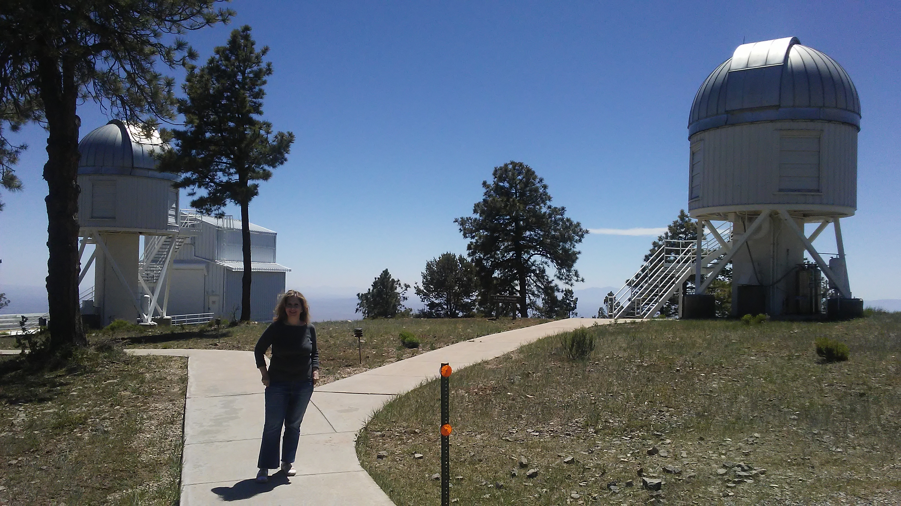
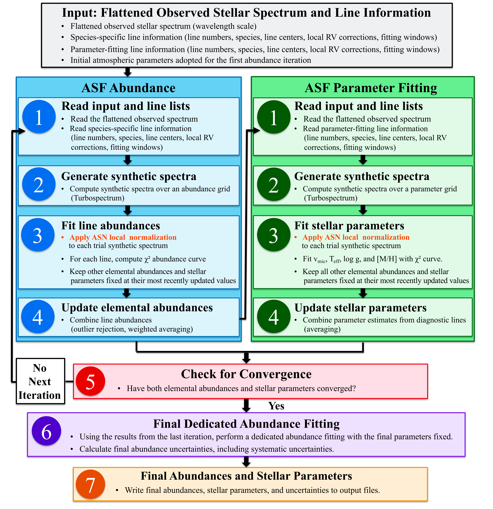

About Me

Education:
PhD (Astronomy): Georgia State University (USA)
Msc (Astronomy): York University (Canada)
Msc (Physics): University of Isfahan (Iran)
BSc (Physics): Isfahan University of Technology (Iran)
I am currently a postdoctoral researcher at the University of Tarapaca (UTA) and also a member of the Center for Excellence in Astrophysics and Associated Technologies (CATA) in area 6 (M dwarfs, Exoplanets, and Astrobiology), Santiago, Chile, which is marked as the fourth country where I've pursued my studies.
My goal is to develop new techniques to characterize and establish a sample of cool M-dwarf benchmarks using high-resolution spectra and calibrate parameters and abundances in binary systems.
Prior to reach this position, I had a long journey dedicated to research and teaching in both physics and astronomy. Previously, I was a postdoctoral researcher and a member of Exolab team
at the University of Kansas, USA, where I developed a robust, automatic method to measure the chemical abundances of JWST planet-host cool dwarfs. The resulting abundances can then be used to search for chemical connections between planets and
their host stars, providing fundamental insight into the composition and formation of planetary systems. I received my PhD in astronomy
from Georgia State University, USA, where I created an automatic pipeline to determine the physical parameters of a large sample of M dwarfs and metal-poor M subdwarfs using low-resolution spectra, which were then employed to trace the chemical properties
of the local Galactic disk and halo. I completed my master program in astronomy at York University, Canada, focusing on the photometric metallicity calibration of M dwarfs and its application to a large sample of M dwarfs to investigate the metallicity variation of these low-mass stars with the Galactic height in the disk.
My exploration on the properties of cool dwarfs began just before my master's program, an area that has remained my main research interest ever since.
Research

Research Interests:
Physical parameters and chemical abunadances of cool dwarfs using low- and high-resolution spectrscopy
Motivation:
As the most abundant stars in the Milky Way, cool dwarfs (Teff <4700 K) offer an excellent tool to study the chemical enrichment history
of the Galaxy. In addition, the low mass and radius of these stars have led them as important targets for planet detection and
characterization, which provide ideal sites to probe the planet formation mechanisms. The characterization and chemical abundance measurements of cool dwarfs
are therefore of great importance in both Galactic and planetary astronomy. For my research, I have been devoloping spectral fitting techniques to determine the physical
parameters and elemental abundances of these small stars in both the optical and near infrared regions, using low- and medium-resolution spectra (observed from the MDM, Lick, Kitt-Peak National,
and Cerro-Tololo Interamerican Observatories) and high-resolution spectra (observed from ARCES/Apache Point Observatory and IGRINS/Gemini Observatory-South).
I also aim to automate these techniches to be performed in a timely manner.
Publications: NASA ADS,
Google Scholar
AutoSpecFit

General workflows of AutoSpecFit and AutoSpecNorm
AutoSpecFit (ASF) is an automated spectral model-fitting framework
developed to measure the detailed chemical
abundances of cool dwarfs using high-resolution spectroscopy.
The code was designed to address the unique challenges of cool-dwarf
spectra, including dense molecular absorption, severe line blending,
and difficulties in continuum placement.
ASF uses AutoSpecNorm (ASN) for local pseudo-continuum normalization.
The observed spectrum is locally pseudo-continuum normalized separately with respect
to each synthetic spectrum evaluated during the chi-square fitting procedure, allowing
the pseudo-continuum placement to adapt to abundance-dependent spectral variations and ensuring
self-consistent abundance measurements.
ASF combines local pseudo-continuum normalization with iterative
line-by-line spectral synthesis fitting to derive robust elemental
abundances. The framework is optimized for cool dwarfs but can also
be applied to hotter FGK stars. Current applications include
exoplanet host characterization, Galactic chemical evolution,
chemical tagging, and investigations of star–planet chemical
connections.
Scientific Motivation
Cool dwarfs are the most numerous stars in the Milky Way and are
among the most important targets for exoplanet discovery and
characterization. Accurate measurements of their physical
parameters and chemical abundances thus provide crucial insight into
Galactic structure and evolution as well as the composition and
formation of planetary systems.
Key Features
- Automated spectral synthesis fitting
- Line-by-line abundance determination
- Local pseudo-continuum normalization
- Iterative abundance refinement
- Multi-element chemical abundance analysis
- Support for high-resolution optical and near-infrared spectra
- Designed for M dwarfs and extendable to FGK dwarfs
Workflow
- Read observed spectrum and spectral line list.
- Generate synthetic spectra using Turbospectrum.
- Perform local pseudo-continuum normalization.
- Measure line-by-line χ² values.
- Determine best-fit abundance for each line.
- Combine individual measurements into species abundances.
- Iteratively update abundances until convergence.
- Generate final abundances and diagnostic products.
GitHub Repository
Source code and documentation are available on GitHub:
AutoSpecFit GitHub Repository
Publications
-
Hejazi et al. (2024), ApJ, 973, 31
-
Hejazi et al. (2025), AJ, 170, 18
-
Additional AutoSpecFit developments and applications
are currently in preparation.
Contact
Neda Hejazi
Postdoctoral Research Associate
University of Tarapacá & CATA
Chile
Email: nhejazi@gestion.uta.cl
← Return to Main Website
Public
Cool Stars 22:
I was the principal proposer/organizer and the chair of a splinter session in the Cool Stars 22 conference, 24–28 June 2024, San Diego, California, USA:
"Planet-Host Cool Dwarfs: Star-Planet Connection and Tracing Planetary Formation and Composition"
The main goal was to bring together worldwide experts in the field of cool-dwarf spectroscopy as well as exoplanet characterization and planetary
formation to discuss the newest findings.
CS22 Star-Planet Splinter Website: Click here for more details!
Conference paper
Best View Cabins

Escape to Serenity
Welcome to Best View Cabins, a peaceful retreat surrounded by
the natural beauty of Annapolis Royal, Nova Scotia, Canada. The beautiful cabins
offer a relaxing place to unwind, enjoy beautiful scenery, and experience
the charm of one of Nova Scotia's most historic and picturesque regions.
Whether you are planning a quiet getaway, a romantic escape, or a
memorable vacation with family or friends, Best View Cabins provides
a comfortable and welcoming home away from home. Wake up to wonderful
views, spend your day exploring the local area, and return to the peace
and privacy of your cabin.
Cabin Features
The cozy cabins combine comfort, privacy, and beautiful surroundings.
Guests can enjoy peaceful lake views, forest scenery, thoughtfully
designed interiors, and the relaxing atmosphere of the Nova Scotia
countryside. Each stay is prepared with care, with personalized service
and attention to guest comfort.
Why Stay with Us?
- Peaceful and comfortable private cabins
- Beautiful Annapolis Basin and forest views
- A quiet setting surrounded by nature
- Convenient access to Annapolis Royal and nearby attractions
- A welcoming atmosphere and personalized service
- An ideal retreat for couples, families, and nature lovers
Discover Annapolis Royal
Best View Cabins is located near Annapolis Royal, a wonderful destination
for visitors interested in nature, history, sightseeing, and peaceful
coastal experiences. After exploring the region, guests can return to
the comfort and tranquility of their cabin and enjoy the surrounding
landscape.
Plan Your Stay
Visit the official Best View Cabins website to explore our cabins,
view rates, check availability, and contact us about your stay.
Visit Best View Cabins
www.best-view-cabins.ca
Contact
Email:
nhejazi@ku.edu
nhejazi1@gsu.edu